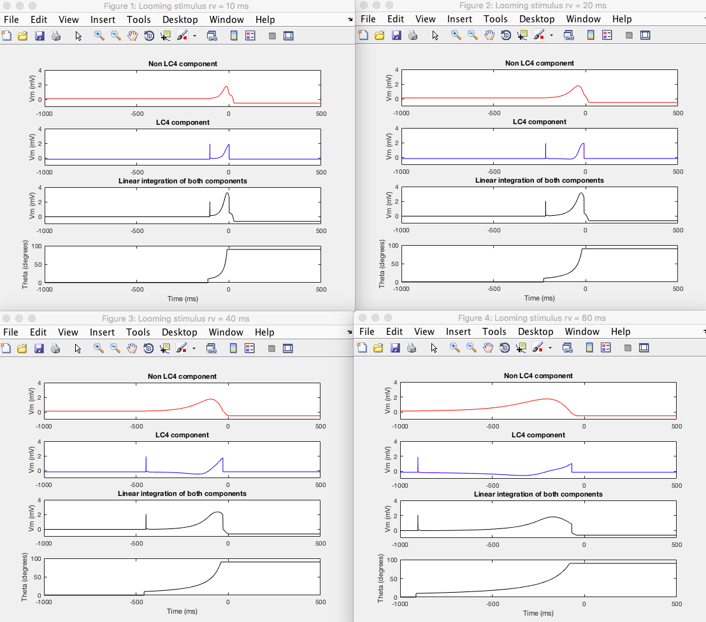
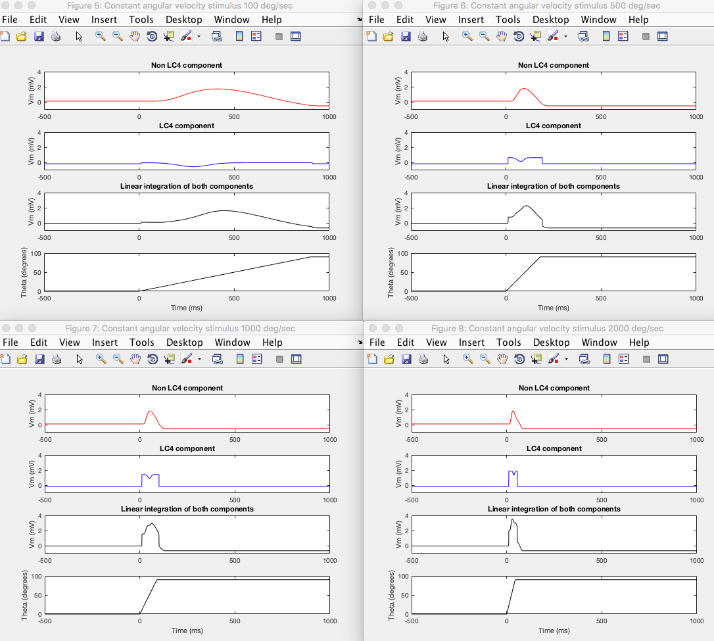

This is the readme for the model associated with the paper: von Reyn CR, Nern A, Williamson WR, Breads P, Wu M, Namiki S, Card GM (2017) Feature Integration Drives Probabilistic Behavior in the Drosophila Escape Response. Neuron 94:1190-1204.e6 This model was contributed by CR von Reyn. To run, download and extract this archive and then type GF_loom_model on the matlab command line. After a brief delay you should see the following similar to the paper's figure 8:  